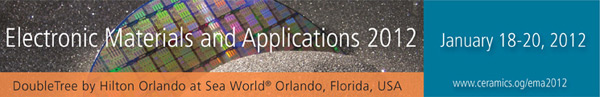

We will participate to the Electronic Materials and Applications 2012.
-
Session: Interfacial Processes and In Situ Methods for Energy Storage Materials and Devices II.
-
Talk: 2:00PM - Neutron Computed Tomography of Lithium Distribution in Porous Carbon Foams and Discharged Li-Air
Cathodes (Invited Speaker)
-
Authors:Hassina Bilheux, Jagjit Nanda, Sophie Voisin, Gabriel Veith, Lakeisha Walker,
Srikanth Allu, Sreekanth Pannala, Partha Mukherjee, Nancy Dudney, Oak Ridge National Laboratory, USA.
 International Society for Neutron Radiography. 7th International Topical Meeting on Neutron Radiography
16-24 June 2012 - Kingston, Ontario, Canada.
International Society for Neutron Radiography. 7th International Topical Meeting on Neutron Radiography
16-24 June 2012 - Kingston, Ontario, Canada.
Applications and Imaging for Neutron Radiology and Tomography.